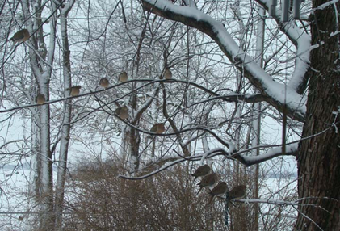

Mourning doves, or turtle doves, as some people call them, are truly birds of all seasons, as they are year-round residents in most of North America. Alas, none of our 50 United States has chosen the mourning dove for its state bird.
They are beautiful, sleek birds with pale grayish brown heads and breasts, dark beaks, long necks, and darker gray wings with black spots. There is a small semi-circle of darker feathers under the eye. The tail is long and tapered. They walk purposefully on their reddish legs and feet. Doves' overall length is about 11 inches. The male has an iridescent, rosy breast. Their wings make a distinctive "whistling" sound when taking off and landing. Doves' flight speed can reach 55 mph.
Doves are easy to spot when perched, sitting almost erect, creating a long silhouette, tapered at either end.
They eat almost any wild seed or from a feeder, preferring to glean from seeds that drop on the ground. I have seen doves eat ants and other insects. When you see a dove continuously pecking on the ground, it may be adding grit to its craw to help digestion.
They could be the most prolific of the birds; if they aren't, it's not from lack of trying! One sure sign of approaching spring is when you hear the doves cooing and see the male puffing up, strutting, cooing, and nodding his head at the female of his choice. There may be snow on the ground, but there's love in his heart! These birds are monogamous and if both birds survive, they will have families together the next season. The female avoids his advances for a while, but before long, the male finds a nesting site – usually a forked branch in a tree - and presents it to the female for her approval. They may build a nest from scratch or find another bird's old nest and pile twigs, grass, pine needles and sticks atop it until it resembles a thick pile of "Pick Up Sticks."
The female lays two (usually) or three white eggs. I have seen three babies struggling to not fall out of a crowded nest. Some authorities credit the third egg with another female dove using the nest. The male will take turns sitting on the eggs and then, in about two weeks, they will take turns feeding the young hatchlings. The parents feed the young by regurgitating a milky substance (crop milk) into the babies' throats.
It is rather sweet to see the male arrive at the nest, sit and "chat" for a while (little throaty coos), and then take over the nesting duty. I have heard the bird on the nest cooing until its mate arrives to give it a break. Its "oo-ah-ooo-ooo-ooo" will be echoed from a distance. You can almost feel the relief of the now off-duty spouse as it hobbles out of the nest, resting for a bit beside its mate before flying off.
You can see doves nesting during a spring snowstorm and right straight through September, perhaps into October if weather isn't too harsh.
The young are still in the nest when they are almost the size of their parents, spilling over the sides of the rickety stack of material. When young doves leave the nest, about four weeks after hatching, they are not able to fend for themselves for some time. Many times I have seen a pair of young doves in my small fenced-in garden, huddled together waiting for their next meal. In the meantime Mom may be back sitting on another clutch of eggs!
During hot, dry weather doves in the birdbath will dip one wing at a time. They also wade into the center of the birdbath and hunker down to soak and apparently cool off. They may be able to shed mites this way also!
For several years doves have occupied nests on the top curve of downspouts on the front and the back of my house. Robins built the original nests, and the doves took them over and piled their precarious stack of material atop it.
They are not the brightest members of the feathered kingdom. Doves once built a nest right in the rain gutter on the front of my house. I'm sure in a hard rain, most of the nest was washed away – until it blocked the downspout, and then it would have been awash.
One winter during an ice storm I watched a dove land on a slick branch of my back yard maple tree and slide all the way down to the end of it. They will sit motionless on the ground in the sun and sometimes will extend one wing and then the other wing. It's common to see a flock of doves perched in a tree gleaning warmth from the sun. It's a bit spooky to see them outlined against a dull sky like a scene from the movie, The Birds. They also perch together during a storm, braving the elements with their heads tucked into their shoulders like fishermen on the high seas.
My Mom, who loved all the birds, would sit in the backyard and mimic the doves' coos, often receiving replies. She would comment on how pretty the male's rosy breast was in the sunlight. Years ago she rescued a young mourning dove and kept it alive until it could survive on its own. She fed it tiny bits of bread dipped in milk.
When my Dad was young he thought the doves' cooing was an owl's hoot.
I enjoy hearing their cooing during off-winter months. With my bedroom window open, the doves nesting on a nearby downspout, their soft, muted song is like a lullaby in the early evening and a soft wake-up call in the morning.
